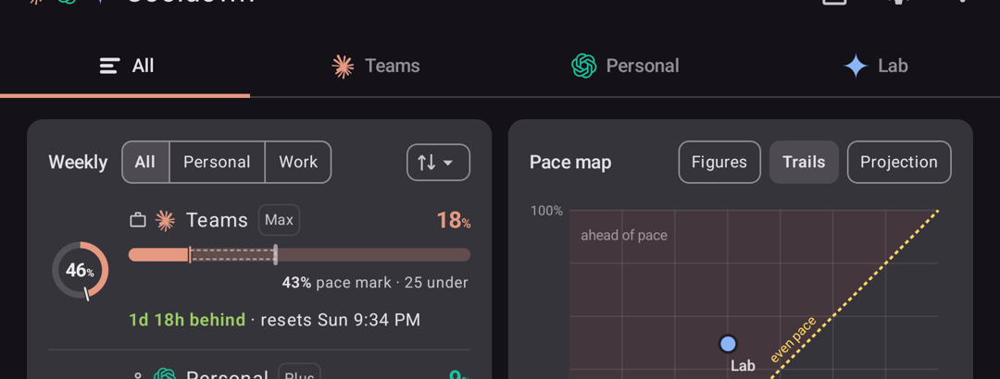
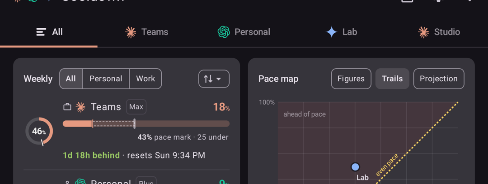
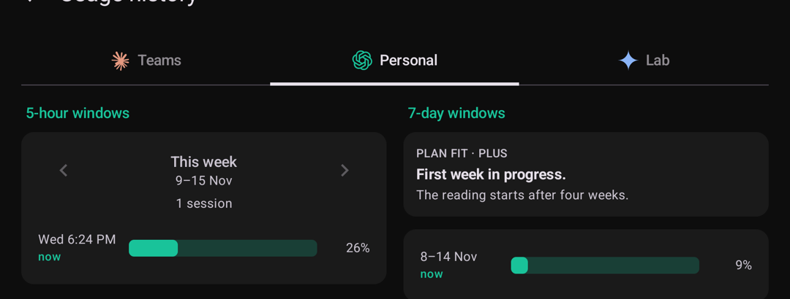
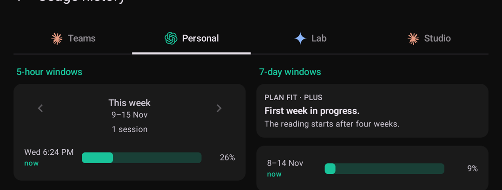

CCBG-81 (History Tab Wrap) — the History strip scrolls like Main's
RUNBOOK Step A6, added by Robin 2026-11-11. Real emulator captures (fold7inner, AOSP, dark): before = main at 8916028; after = a local prototype of option A. 360 dp = a 1080×2400 phone at 480 dpi; cover = 1080×2520 at 411 (≈420 dp, the Fold 7 cover class).
What is wrong
Main counts its All tab, so with three accounts it has four tabs and scrolls. History has no All tab, so with the same three accounts it keeps a fixed, equal-width strip, and at 360 dp "Personal" wraps to "Person / al". Four accounts already scroll on both screens.

Option A — History counts tabs as Main does (recommended)
One rule for both strips: History scrolls whenever Main's strip would, i.e. from three accounts (Main's three accounts + All = four tabs). Two accounts stay a fixed strip on both screens. Scrolling tabs size to their label and start at the left edge, exactly as Main's do; the selected tab is scrolled into view.


What option A does not fix (today on both screens)
With two accounts both strips stay fixed, so a long name (labels go up to 16 characters) still wraps at 360 dp — on Main as well, today. Option B below would cover it; A leaves it as shipped.
Option B — scroll only when a label won't fit (Robin's pick, 2026-11-11) · captured
Built as a prototype and captured on the same emulator. One shared strip for Main and History: each tab's label (mark + name, All included) is measured at its one-line width in the tab's text style; if any label plus the tab's 32 dp padding is wider than its equal share of the strip, the strip scrolls, otherwise it is the fixed, equal-width row. It follows the names, the width and the font size, not the account count.






What B changes beyond the bug: on the cover and the inner screen Main's strip becomes the fixed, evenly spread row whenever the names fit (today it scrolls from four tabs at every width); at 360 dp nothing changes on Main except that a long name now scrolls instead of wrapping. Large text makes labels wider, so the same screen tips to scrolling sooner. Swiping between accounts and TalkBack are unchanged.
The choice
| Option | Rule | Cost |
|---|---|---|
| A · Count like Main (recommended) | History scrolls from 3 accounts, at every width; one shared rule, so the two strips can never disagree. | On the cover, 3 short names lose the centred thirds and sit left-aligned, as Main's already do. A long name with 2 accounts still wraps on both screens. |
| B · Scroll when a label won't fit | Both strips (Main and History) measure their labels and scroll only when one would not fit its equal share on one line. | Changes Main too (beyond the bug); the cover keeps centred thirds; the strip's look then depends on the names and the width, not the account count. |
TalkBack is unchanged either way (each tab reads its provider and name). iOS: Step 2 checks whether the iPhone 17e's History strip wraps the same way (Lane I is closed).